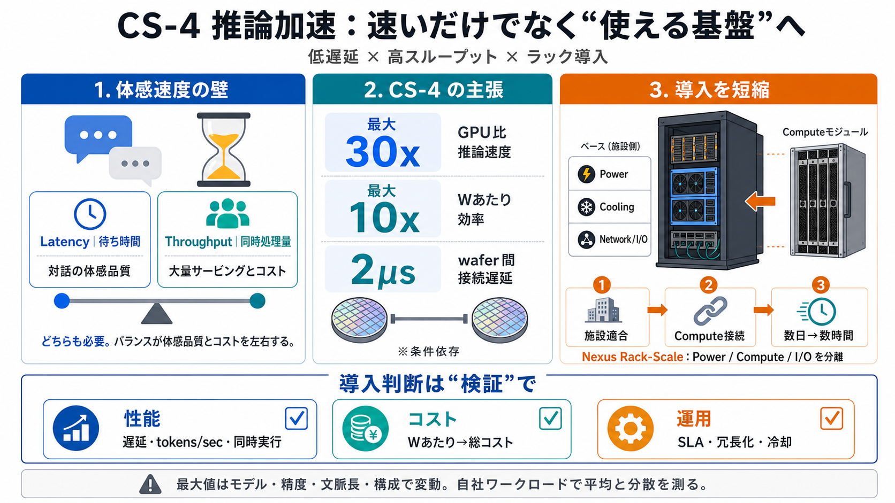

Cerebras Unveils CS-4, Up to 30x Faster Than GPUs - Stock Titan
SUNNYVALE, Calif., Aug. 18, 2026 (GLOBE NEWSWIRE) -- Cerebras Systems (NASDAQ: CBRS) today introduced the Cerebras CS-4,…

SUNNYVALE, Calif., Aug. 18, 2026 (GLOBE NEWSWIRE) -- Cerebras Systems (NASDAQ: CBRS) today introduced the Cerebras CS-4,…
#### CS-4 expands the ultrafast inference frontier with up to 10x more token capacity and up to 2x faster performance th…
Performance comparisons are based on third-party benchmarking or internal testing. Observed inference speed improvements…
In September 2025, the company raised $1.1 billion in a Series G round, selling shares for $36.23 each, or a valuation o…
thermal management, and reliability. The results suggest that wafer-scale integration can surpass conventional architect…